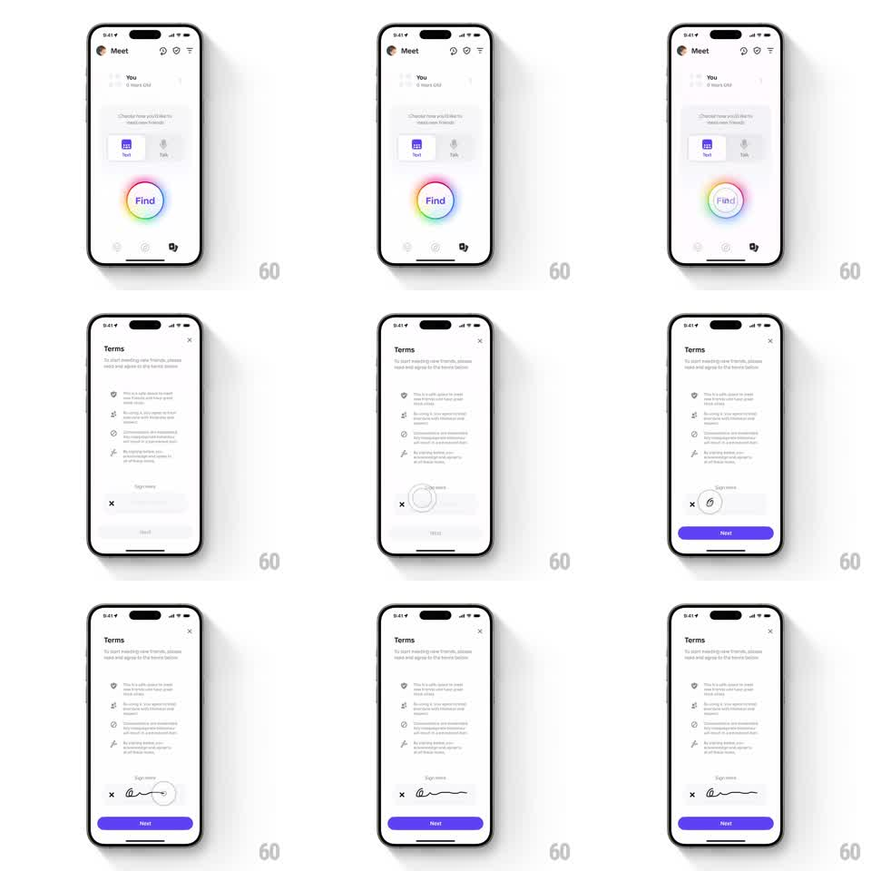

Media
Frame-by-frame

Rebuild this interaction 1:1: Honk's terms signature - the Terms sheet asks the user to sign in a "Sign here" pad, and once a signature is drawn, the gray "Next" button springs into its active purple state with a bouncy transition.

Rebuild this interaction 1:1: Honk's terms signature - the Terms sheet asks the user to sign in a "Sign here" pad, and once a signature is drawn, the gray "Next" button springs into its active purple state with a bouncy transition. ## Integration Integration: stack-agnostic spec - springs given as stiffness/damping, timed motions as duration + curve; map every value to your framework and animation library of choice. ## Scene Meet tab behind. Terms sheet: "Terms" title, "To start meeting new friends, please read and agree to the terms below" subcopy, four terms with icons (be safe, no explicit content, no discrimination, report violations), then a "Sign here" signature pad with a clear X at its left, and a bottom "Next" button - gray/disabled until signed, purple when active. ## Motion spec Pattern: signature capture with bouncy button activation. - Sheet entrance: slides up over dimmed Meet (spring ~300/24, 350ms); terms rows stagger in (translateY 10pt, 60ms apart, 250ms). - Signing: the pad captures freehand strokes (2pt dark ink, round caps, live rendering with no lag); the X clears the pad with a quick fade of the strokes (200ms). - Activation: the moment the first stroke completes (finger lifted with ink present), "Next" animates from gray to purple (background color lerp, 200ms) with a bounce (scaleY 1 -> 1.08 -> 1 and a 4pt jump, spring ~340/13) and its label brightens to white. - Clearing the pad reverses it (purple -> gray, 200ms, no bounce). - Tap Next: button pulses (scale 0.96 -> 1, 150ms) and the sheet advances. ## Calibration - The bounce fires once per activation, not on every stroke. - The ink is smooth - simplify the stroke path so curves have no corners. ## Reduced motion Button changes color without bounce; ink renders statically. ## Don't miss - The signature pad sits inline in the sheet, above the button - not a separate modal. - The terms list stays scrollable behind the fixed pad and button.